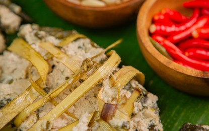
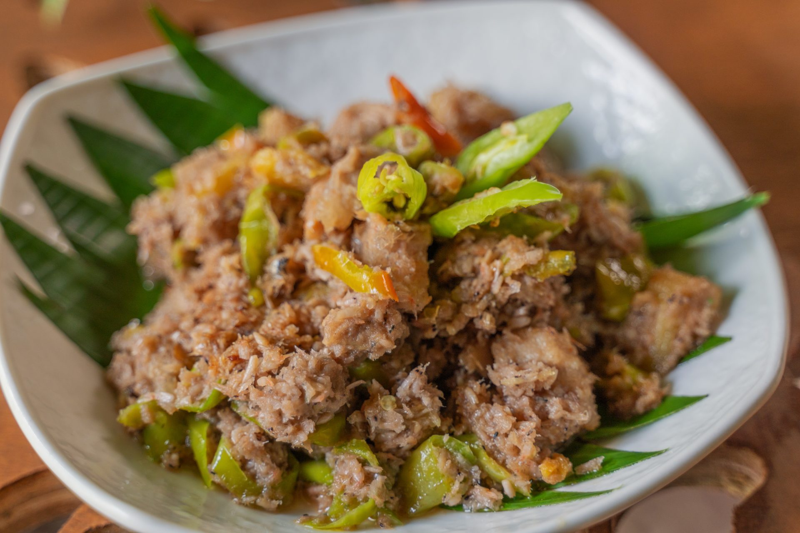
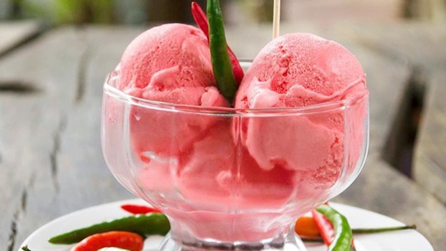

Festivals and Culture
Experience the vibrant traditions and epic stories of the Bicolano people.

Ibalong Festival
Legazpi City, Albay
Celebrated in: August
A non-religious festival celebrating the Ibalong Epic, featuring street dances that recreate the battles of mythical heroes Baltog, Handiong, and Bantong against fierce monsters.

Magayon Festival
Province-wide (Legazpi City Hub)
Celebrated in: May
A month-long celebration honoring the legend of "Daragang Magayon" (Beautiful Lady), the heroine of the Mount Mayon origin myth. It showcases Albay's beauty, history, and culinary products.

Tabak Festival
Tabaco City, Albay
Celebrated in: June
A celebration of the city's foundation and its famous cutlery industry. The festival features "Padyak" (pedicab) races and showcases the skill of local blacksmiths in crafting high-quality blades.

Abaca Weaving Tradition
Malilipot & Camalig, Albay
Celebrated: Year-round
Albay is a leader in the Abaca industry. This cultural tradition involves extracting fiber from Manila hemp to create world-class bags, carpets, and "Pinukpok" fabric, reflecting the Bicolano's craftsmanship and patience.
Food and Delicacies
A taste of Albay’s spicy, creamy, and distinct flavors.

Pinangat
Taro leaves, chili, and meat slow-cooked in coconut milk for hours until tender and creamy.
Where to try:
Camalig, Albay

Bicol Express
An iconic spicy dish made with pork chunks, shrimp paste, coconut milk, and lots of chili.
Where to try:
Legazpi City Restaurants

Sili Ice Cream
A unique dessert that balances cold sweetness with a surprising spicy kick from local chilis.
Where to try:
1st Colonial Grill

Tiwi Halo-Halo
Famous for using cheese and creamy leche flan, this version features a unique local syrup.
Where to try:
DJC Halo-Halo, Tiwi